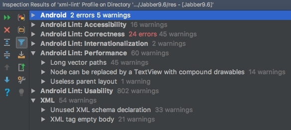
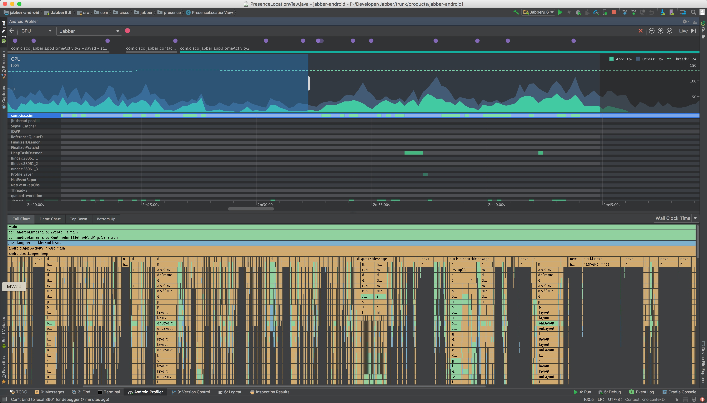
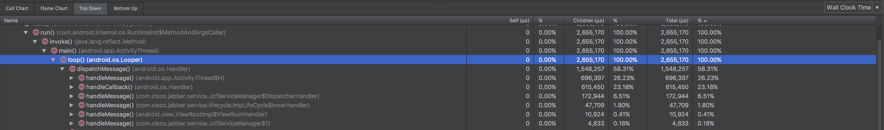
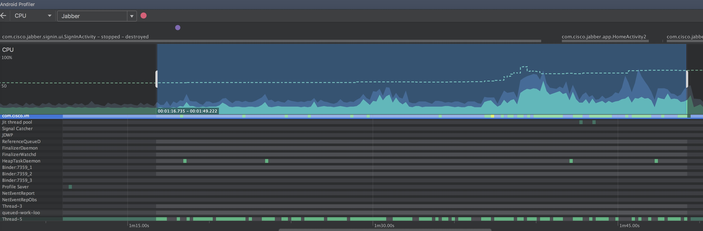
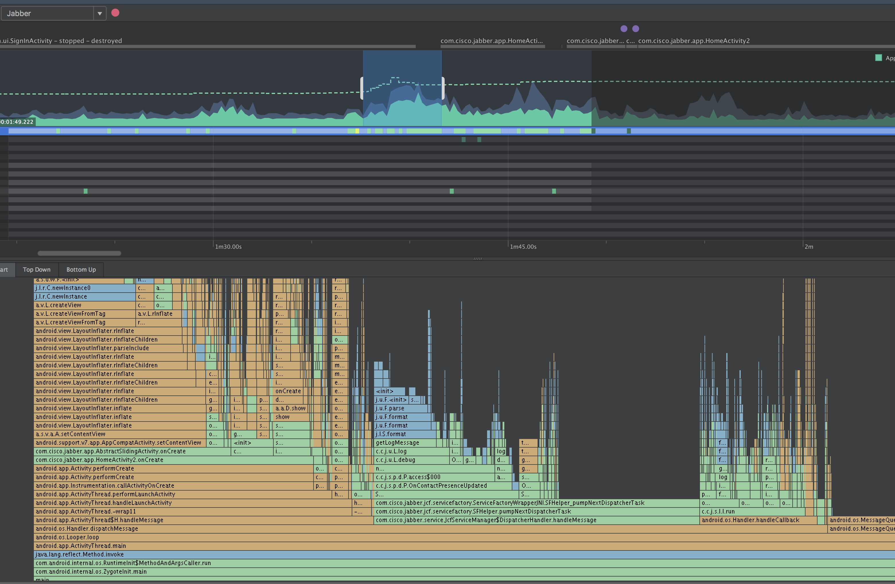
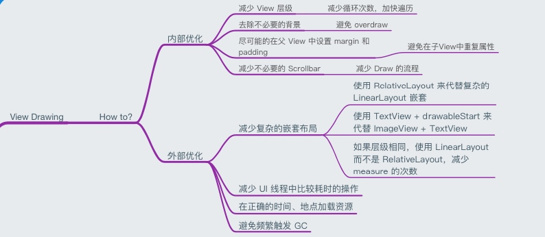

Slow rendering can cause Frozen Frames issue.
To avoid Slow Rendering issue. Try to analysis Android App with tools.
0x00 Tools used
There are serval tools can be used to help us check view/layout performance.
Hierarchy viewer
- Hierarchy View
- Some blog
- Not very easy to use, loading slow.
- Can help detect the layout hierarchy and check if too many level of views(Can use lint instead)
Trace view
- Trace View
- Need enable adb integration in Android Studio -> Tools -> Android -> Enable ADB integration
- Android Profiler
- Using Android Profiler, choose CPU usage.
- Recoding the actions/CPU usage when doing somvething.
- References:
systrace
- systrace
- Useful ⌘:
python systrace.py -a com.cisco.im --time=15 -o ~/Desktop/trace.html sched gfx view wm - Open this HTML file in Chrome(only Chrome)
- Find alert on the right side.
Lint
- First config rules in Android studio -> preferences -> Editor -> Inspections, check all related rules
- Goto Android studio -> Analyze -> Inspect code, choose res folder
- Start inspection
- Check out Android Studio panel
0x01 Lint result
Main issues
Unused XML schema declaration
A layout with children that has no siblings, is not a scrollview or a root layout, and does not have a background, can be removed and have its children moved directly into the parent for a flatter and more efficient layout hierarchy.
Long vector paths
Using long vector paths is bad for performance. There are several ways to make the pathData shorter:
* Using less precision
* Removing some minor details
* Using the Android Studio vector conversion tool
* Rasterizing the image (converting to PNG)Node can be replaced by a TextView with compound drawables
A LinearLayout which contains an ImageView and a TextView can be more efficiently handled as a compound drawable (a single TextView, using the drawableTop, drawableLeft, drawableRight and/or drawableBottom attributes to draw one or more images adjacent to the text).

0x02 systrace results
Checked on four main page:[HomeActivity(Including contact list, profile), ChatActivity(Including sending chat, emoticon), Call(Incoming call), Settings(List)]
Trace alert
These alerts are found in systrace.html
- Scheduling delay
- Expensive measure/layout pass -> Need more check
- Long View#draw()
- Inefficient View alpha usage
- Inflation during ListView recycling -> Need more check
0x03 Trace view
Trace view can help check code call stack and find which piece of codes block the CPU time most.

According to the result of trace view, the most time cost methods are from View, measure, layout, drawing..etc(excluding handler).
- When goto contact profile page in contact list:

- When Sign in: (Cost about 30s, debug mode, cisco.com)

The main reason for time cost is the login flow(UI is not stuck)
Signed in moment:

The most time cost is android.view.LayoutInfalter
HomeActivity creation cost a lot of time. (Create all views, load all tabs, handle callback..etc.)
0x04 Summary
Part 1: View measure/layout/drawing
- Some layout can be replaced by a simpler layout, use RelativeLayout instead of complex LinearLayout.
- Using TextView with drawable instead of using a LinearLayout with a TextView and a ImageView.

Part 2: Reduce unused callback/handler for sign in part
- When signed in, we receive too many callbacks, handle too many event, such as: invalid credentials, popup fingerprint authentication, auto upgrade check, other handlers... > For those not urgent event/handlers, we can put it back after signed in for a while, not the time when create HomeActivity
- Too many Views/Layouts/Loading time when create HomeActivity > Reduce view hierarchy in HomeActivity, refactor View layouts
Part 3: Telemetry
Telemetry data can be used to monitor application runtime CPU and memory usage information.
There are some tools can help us. We can choose to use 3rd party tools or write by ourself.